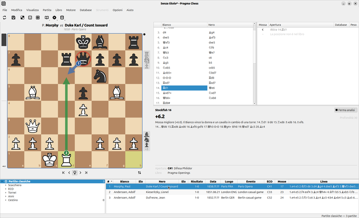
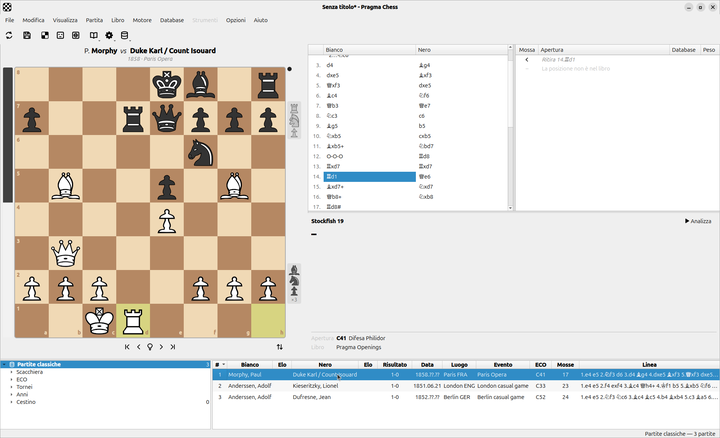
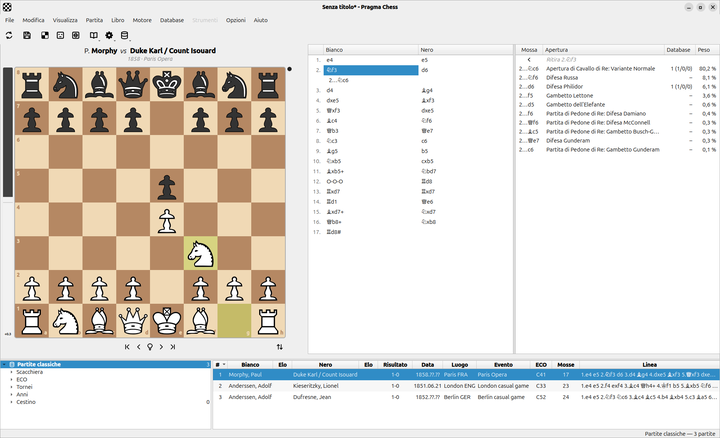
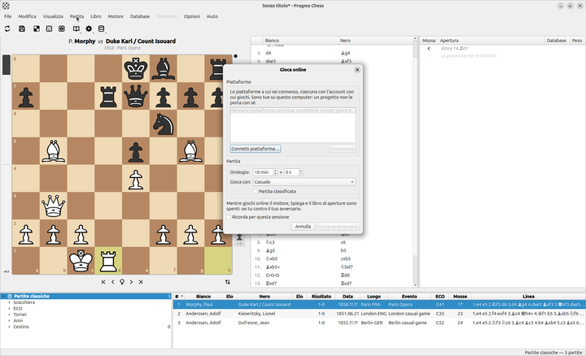
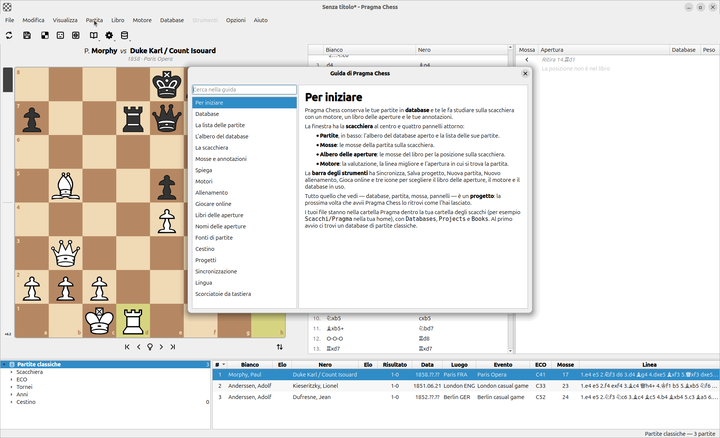

Bases de datos de partidas
Tus partidas en bases de datos .pdb: importa PGN, partidas de lichess.org y chess.com, torneos de torneionline.com y archivos de ChessBase. Busca por posición, variante, jugador, apertura, torneo y año.
Una base de datos de ajedrez de código abierto para estudiar, entrenar y jugar: ligera, sencilla, con lo que de verdad importa.
Gratis, con licencia MIT. Para Windows, macOS y Linux.
Todo lo que un ajedrecista necesita para guardar, estudiar y mejorar, y nada que estorbe.
Tus partidas en bases de datos .pdb: importa PGN, partidas de lichess.org y chess.com, torneos de torneionline.com y archivos de ChessBase. Busca por posición, variante, jugador, apertura, torneo y año.
Pulsa E y el motor te muestra en el tablero por qué la última jugada es buena o mala: flechas rojas donde cae material, flechas azules para la respuesta que marca la diferencia, un mate forzado jugado entero.
Juega una jugada que no es la siguiente y se convierte en una variante, mostrada bajo la jugada que sustituye. Anota las jugadas con !, ?, ±, ∞… Todo se guarda con la partida y viaja en PGN.
Juega contra el motor, desde el libro de aperturas que tú ajustas. Cuando tu jugada es un error, el tutor detiene la partida y te deja deshacerla, explicarla o seguir.
Conecta tu cuenta de lichess.org, o freechess.org incluso como invitado, y juega contra personas desde el mismo tablero. Mientras juegas, el motor, Explicar y el libro están apagados: eres tú contra tu rival.
Libros Polyglot con tu repertorio y los pesos que elijas, para que el motor te entrene en las líneas que quieres. Nombres de aperturas en inglés e italiano.
Mantén tus bases de datos y proyectos iguales en todos tus ordenadores a través de una carpeta FTP, WebDAV o Git, y en el móvil con la app complementaria. Nunca se borra nada sin una fusión.
Base de datos, partida, jugada, paneles y motor forman un proyecto que vuelves a abrir tal como lo dejaste. Interfaz de escritorio nativa, en español, inglés e italiano.
Pragma Chess en GNOME. Haz clic en una imagen para verla a tamaño completo.

Explicar: por qué 14.Td1 gana la partida de la Ópera
Una partida de la base de datos en el tablero, con las jugadas y la lista de partidas
El Árbol de aperturas: las jugadas del libro con sus pesos y las aperturas a las que llevan
Jugar en línea: conecta una plataforma, elige reloj y color, encuentra un rival
La guía, integrada, en tu idiomaElige tu sistema. La última versión es la
Instalador para Windows 10 y 11, de 64 bits. En la página de versiones hay un .zip portátil.
Descargar para Windows PragmaChess-windows-x64-setup.exeImagen de disco para Mac con Apple Silicon. Ábrela y arrastra Pragma Chess a Aplicaciones.
Descargar para macOS PragmaChess-macos-arm64.dmgPaquete .deb para Ubuntu 24.04 o posterior y Debian 13 o posterior.
Descargar el .deb pragma-chess_amd64.debPaquete .rpm para Fedora y distribuciones compatibles.
Descargar el .rpm pragma-chess.x86_64.rpmLa app para móviles Android 8 o posterior, en beta: enlázala con el cliente de escritorio para llevar contigo tus bases de datos y partidas. Pronto en la tienda oficial de aplicaciones.
Descargar el APK PragmaChess-android.apkCada versión trae Stockfish como motor predeterminado; funciona cualquier motor UCI. Todas las versiones y las anteriores →
Los clubes de ajedrez que apoyan Pragma Chess: lo usan, lo prueban y nos cuentan lo que necesitan.
Presenta Pragma Chess a tus socios y luego cuéntanos cómo fue en nuestro grupo de WhatsApp, y mándanos allí tu logo. Cómo funciona
Pragma Chess se hace a la vista de todos, con clubes de ajedrez y jugadores.
La guía está integrada en la aplicación (Ayuda ▸ Guía de Pragma Chess, F1), con un campo de búsqueda, en español, inglés e italiano, y también aquí en el sitio.
Leer la guía¿Algo va mal o falta algo? Abre una issue en GitHub contando qué hiciste y qué viste.
Issues en GitHub →Pregunta cómo hacer algo, propón lo que falta, enseña lo que has hecho con él: las Discussions del proyecto en GitHub.
DiscussionsEl código tiene licencia MIT: C++ y Qt, tanto el cliente de escritorio como su motor de bases de datos. Las pull requests son bienvenidas.
El repositorio →